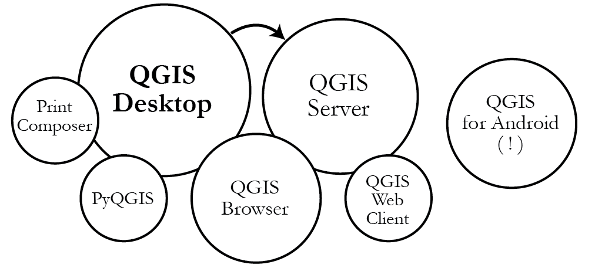
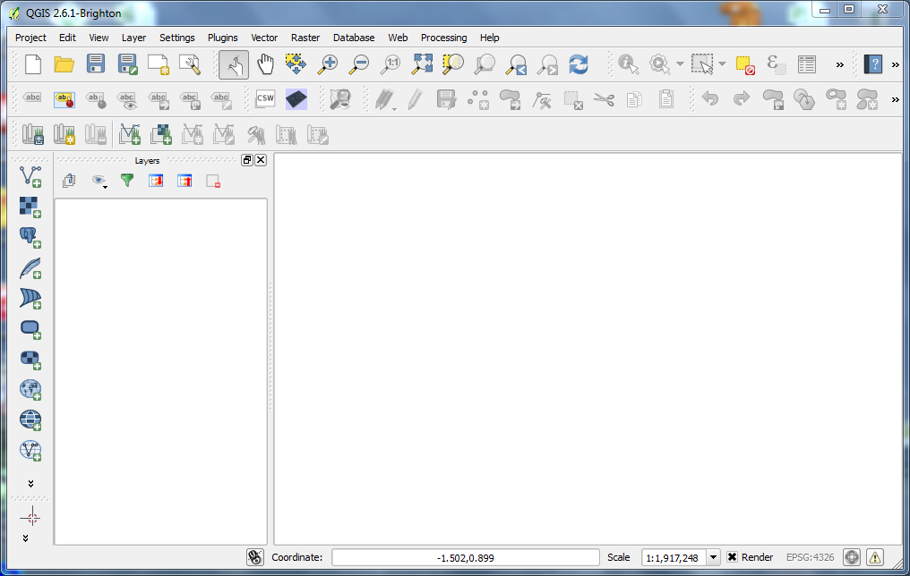
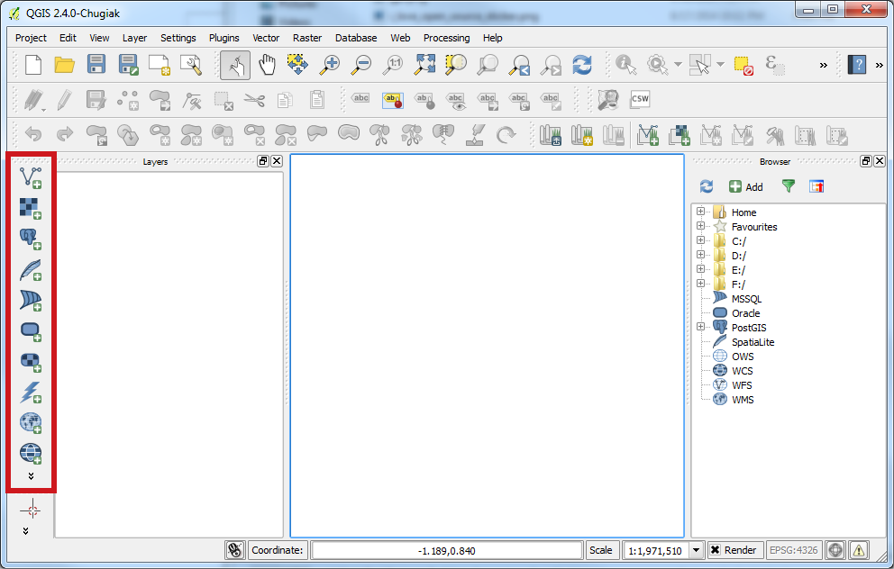
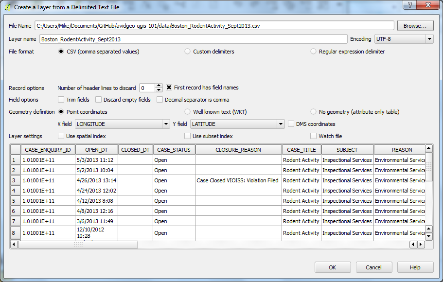
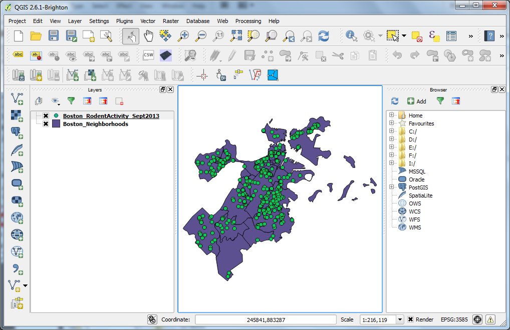
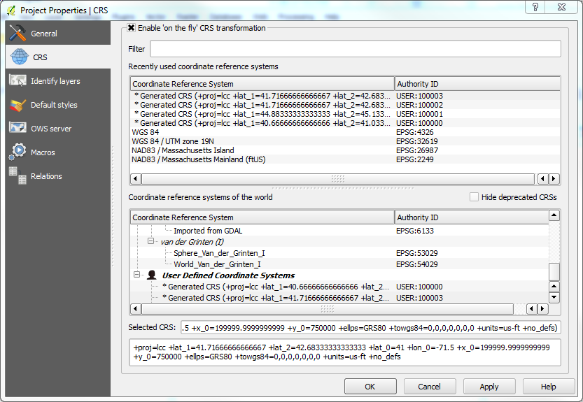
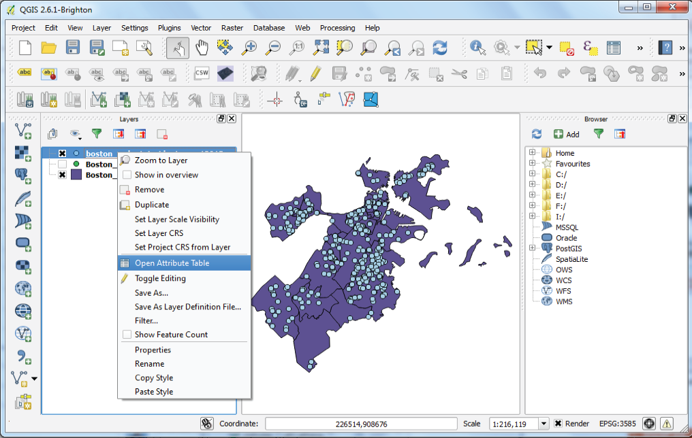
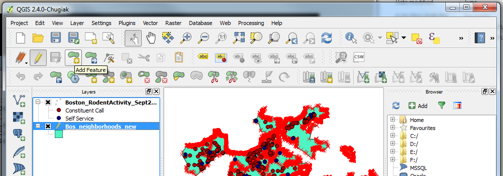
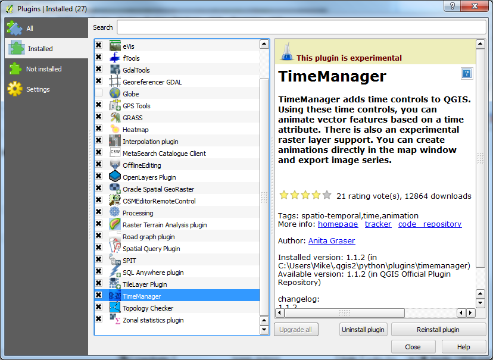

Thank You
hack/reduce
LocationTech
Today's Agenda
What is QGIS?
History of QGIS?
Components of QGIS
Exercise
Free and Open Source
Desktop GIS Software
<3 open source
Official Project of QSGEO
Runs on Linux, Unix, Mac OSX, Windows, and Android(!)
Fully capable, supports vector (points, lines, polygons) and raster

QGIS for Android (beta)
Mobile! Try if you dare!

Exercise
Lets make a map!
Todays Task: RAT MAP!
Rodent Incidents, Sept 2013
Boston Neighborhoods
Rodent Activity (CSV)
Supplemental Data
Download the Data Package
While you are downloading,
A little to get you started...

Familiarize with the UI

Manage Layers (Add Layers)

Layers Panel (Table of Contents)

Lets add QGIS Browser
View -> Panels -> Browser

Others
View -> Toolbars

When you add your CSV
Projections
Will default to the projection set in your project, if none WGS84
Layers -> Individual basis
Project -> Project Properties


Project -> Properties -> CRS
Enable 'on the fly'
Preserve the CSV
Save our CSV as a Shapefile
Right Click on Layer -> Save As

Save as shapefile
Set output location
Set the CRS to:
NAD83/Massachusetts Mainland (ftUS)
This is the reprojection tool!

Lets View Attributes

Layer Properties

Symbolize in Style Tab

Explore the Other Properties
Labels
Fields
Display
Actions
Joins
Diagrams
Metadata

Editing
We won't really do this today.
but you can!
Try Points in Polygon
Calculate the Neighborhoods with the most Rat Violations

Exporting Datasets
Right click -> Save as...
Preserve your transformations.

To the Print Composer

Maps are composed in QGIS using the Print Composer

Add the map element.
Layout your map presentation in Print Composer.
Maps, Legend, Scale, North Arrow, etc.
You can save it and return to it, and update it!

When satisfied:
Export Image
Export PDF
Export SVG
Other QGIS Features:
Map Services
QGIS Server
Web Publishing
Python
Database Connections

Plugins!
One of the neatest features of QGIS
Tons of Open Source Plugins
Plugins -> Plug In Manager
More QGIS in the Future
This is only the beginning.
But for now...